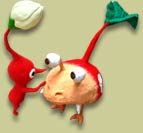
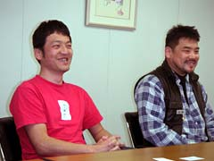
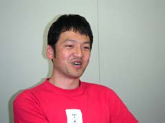
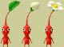
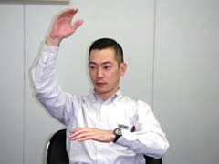
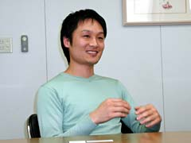
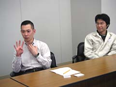
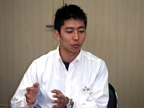
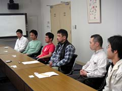

| 今回お話を伺った開発スタッフはディレクター２人＋サウンド担当４人。サウンドだけで４人も出てきてくれるということは、きっと相当に力を入れて制作が進んでいたんでしょうね。全く新しい技法も開発されたとのこと、その辺の内部事情がかなり気になります。 |
 |
| N.O.M 『ピクミン２』はいつごろから作っていたんですか？ |
日野 前作が終わってすぐに宮本の方から「１年で『２』を作れ」と言われまして。せっかく作って、"ピクミン"として定着したキャラクターなので、勢いがあるうちに続編を出せということだったんです。
阿部 開発期間は結局２年半くらいになりました。最初のバージョンでモニターにプレイしてもらっていたら、見直し箇所が沢山出てきまして。モニターの意見はとても重要なので。本来は2003年秋に売るのが課題だったんですが、もう少し見直して手を入れようということになり、半年も延びてしまいました。「延長期間は最大で半年」と言われていたんですが、それを最大限に使った形に(笑)。
|
| N.O.M 『２』のコンセプトは？ |
| 日野 基本的には前作の正当進化です。『１』でできなかったことを沢山盛り込みました。中でも、長いスパンで遊んでもらえるようにというのが一番大きいかな。あと、グラフィック面ではスケール感にこだわりました。『１』では、ピクミンの大きさは遊ぶ人によって捉え方がまちまちでしたが、『２』ではその大きさをもっと強調することで、「ピクミンてその辺にいるんじゃないかな？」と思わせたかったんですよ。
|
| N.O.M 『２』で特に変わったポイントはどこでしょう。 |
日野 前作では日数制限があって、ストイックな遊び方をする感じでしたが、今回は制限なし。いくらでも遊び続けられるようになっています。じっくり遊んで、この世界の深みを分かって欲しかったんです。それと地下洞窟ですね。日数制限がなくなると緊張感が減るので、ピクミンを増やせないという条件がついた場所を入れることで、プレイに緊張感を持たせました。
阿部 あとはピクミンの種類が３種類から５種類に増えた点ですね。これは制作開始時に新しい色を入れようということになっていて。基本を正当に進化させるという意味で増やしました。そして"チャレンジモード"と"２P対戦"があります。対戦の方は、２人で遊べるモードを入れて、ワイワイ遊んで欲しかったということで。
日野 今回特に注意したのは、ピクミンの"生物感"です。生き物としての感触をいかに出せるかというのがテーマでした。 |
| N.O.M オリマーのほかにルーイというキャラも新登場していますね。彼らの名前は…。 |
阿部 色々と候補はあったんですけど。ルージーとか(笑)。
日野 ルーイは２Pモードの副産物ですね。でもルーイが入ることでできる分離行動は、プレイヤーが自由に動けるようにという意味もあります。上手に使って欲しいですね。
|

| N.O.M サウンド面の制作ではどんなことがありましたか？ |
戸高 毎回とてもスタッフに恵まれていると思うんですが、今回はそのスタッフのお陰ですごいプログラムができました。今回は地下に潜りますね。そこで使われるBGMの方式が、自動作曲的、自動演奏的な内容のプログラムです。更にシチュエーションによって変化が加わるというような、非常に複雑なものです。
日野 例えば絵心のあるプログラマーとやりとりをしていると、キャッチボールでどんどんいい絵ができていきます。今回もそういう感じで、疋野がすごいプログラムを作ってくれました。
疋野 表現のためのプログラムですから、コンピューターを過信しては駄目なんです。
人の手による音楽がまずあって、その肝を損なわず、プログラムなりの表現の後押しが一番良い形でできるようにポイントを絞ってみました。絞り込みの話としては、演出過多な状況が生まれた場合に、どの演出にスポットを当てるか、どの演出は引っ込めるか、といった、演出の整理にもかなり気を使いました。
|
| N.O.M ピクミンたちの声などは…？ |
若井 『１』の時から続いて僕の声を使っています。本当はもうひとり声を作る予定の人間がいたんですが忙しくて。気づいたら僕の声が本採用になっていました(笑)。地声を１オクターブ半上げて使っています。
戸高 冗談で、「プレイ時間が長くなってきたら、ピクミンの高い声が１オクターブ半下がって、すごい野太い若井の声で『ピクミン〜』て言わせようか」なんて話もありました(笑)。
|
| N.O.M 任天堂のゲームは内部の方が音声をやってることが多いですね。 |
戸高 家内制手工業ですから(笑)。私はオリマー、ルーイ、社長、UFOなどですね。演じ分けは難しかったです。もとの地声は１種類しかないわけで、それをいじるにしても限界がありますよね。それで考えた結果、両手で喉を絞めるとハスキーな声が出て、「これや！」と。息は止まる、血も止まるで大変でした(笑)。
疋野 それぞれのキャラクターをふくらませて演じ分けていて、素直に驚きましたよ。
渡邊 僕は『びっくり菊』という敵の声をやってるんですが、これってどんな声を出すんだろうと考えた時に「きっとマヌケな声を出すんだろうな」と思ったんですよ。それで、いろいろな音の素材をイメージに合うように加工してみるんですが、結局うまくいかなくて。もう自分がやるしかないと思ってマイクを握りしめ、部屋にこもりました(笑)。
|
| N.O.M 音を作るにあたって特に重要視したことはなんでしょう。 |
戸高 音から伝わってくる質感を出したかったということです。"架空の自然"というもの、その空気感を作りたいと思っていました。若井が前作で創り上げた世界観を発展させつつ、架空の自然をミックスさせたいと。
疋野 生音の虫の声よりもシンセサイザーで作った声を流すことで、虫っぽいけどちょっと違うというような不思議な感じが出るんです。こういう感じで行くんだなと。
渡邊 サウンドに参加した当初、"架空の自然"作りの話があって、それが頭にあったので作業はしやすかったです。ただ、生き物やその辺で鳴っている音が架空の自然のなかに溶けこんでいるかという細かいニュアンスが難しかったですね。
戸高 敵の声なんかも作るのは難しいんですよ。人の形をしてない、つまり骨格が違う。ということは発声方法が違うんです。そこから違和感なく聴ける音を作るというのはとても難しい。でもスタッフは「その図体の生き物が出てきてもおかしくない」と思える音を作ってくれたので、いいものができました。 |
| N.O.M では、ユーザーの方にメッセージをお願いします。 |
渡邊 ゲーム自体もデザイン面でも優れていると思いますが、サウンドも本当にすごいものになったと感じています。ゲームをしながらときには耳を澄まして、ピクミンの音の世界も一緒に楽しんでもらえれば嬉しいです。
疋野 虫眼鏡で覗いたような小さな世界の楽しさを感じられるよう、きちんと作り込まれたゲームです。ほのぼのと毎日少しずつプレイして、その小さな世界を気軽に楽しんでほしいですね。
若井 前作は30日というくくりがあって、それに対する戦略性なんかが求められていました。でも今回はゆったり世界を眺め、時間の経過による変化を楽しんだり、目的なくゆっくりと遊んでほしいです。
戸高 「ゲームを楽しんでもらってなんぼ」なんですよ。ゲームとしての面白みこそが大事でサウンドに注目して驚いて欲しいわけでは決してないんです。プレイしてて、これといって気づきもしない効果音が実はそっと背中を押してくれている…そんな演出ができたと思います。高度な仕組みのサウンドほど自然に溶けこんでいて、遊び手に気づかれないものなんですが、そういう風にごく普通に遊んでいただく中で自然な手ごたえを感じてもらえたなら嬉しいです。それとオマケというか、前作のCMソング『愛のうた』をピクミンたちが斉唱してくれる、というのがありますよ。ヒントは『全色』です。ふつうにプレイしていれば見られると思います。
阿部 全体をていねいに作り込めたと思います。カメラのアングルを変えてピクミンの世界をじっくり観察しながら、ゆったり遊んでほしいです。２人で遊べるチャレンジモードや対戦モードも楽しく作れたと思いますのでお試しください。
日野 『個性いろいろ、ピクミン２』というのがキャッチなのですが、その個性をじっくり感じてほしいです。作り手のこだわりもいっぱいで、遊んでいれば沢山の発見があるはずです。音楽を聴くためだけにボーっと流していてもいいし、自由に楽しんでください。
|
|

|
|